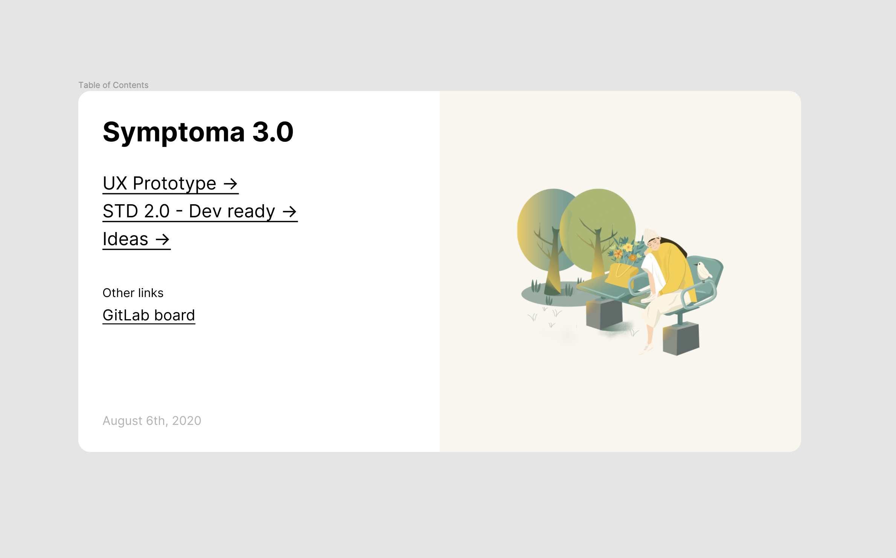

An essay on how more often than not, advice is either disregarded or not
strongly considered, till a person falls into a hole and realises the
value of it.
Things to consider
-
Is the pain or experience of falling into the relevant hole (vs a
general one) absolutely needed, or is there a possible way to avoid
this?
-
While advice will be weighted based on apparent/perceived authority or
“success” of the advisor, is that the core issue here? For example,
unless I’m mistaken, I’ve heard that even for people like PG, people
often don’t understand or realise the value of his advice like “make
something people want” or “do things that don’t scale”. I wonder if
the difference lies in if that statement alone is given or if it is
accompanied my metaphors of specific examples to help drive home the
point.
-
Is the issue with the advice, the way the advice is given, with the
advisor, or with the recipient? What is the assumed order of influence
in the likelihood of understanding/application? What are ways to
counter this?
Heading

- bullet point 1
- Bullet point 2
- OL 1
- OL2
- OL 3
Bold
Italic
Underlined
Return to home